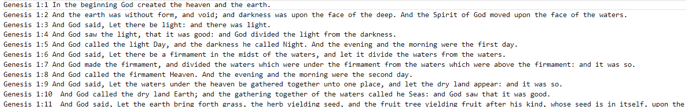
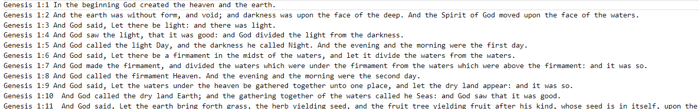

The final output was a Java program that could efficiently process the Bible text and provide an accurate count of each unique word. The project also provided valuable insights into the time and space complexity trade-offs associated with different data structures and algorithms when applied to a real-world text analysis task. The performance analysis demonstrated the significant speed advantages of using more efficient data structures and algorithms like HashMap and ArrayLists for this type of problem.
ArrayList
LinkedList
HashMap
 
